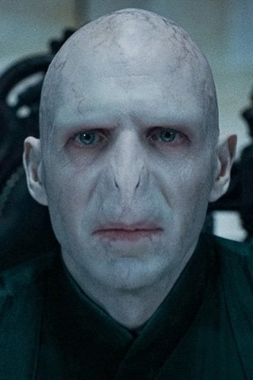
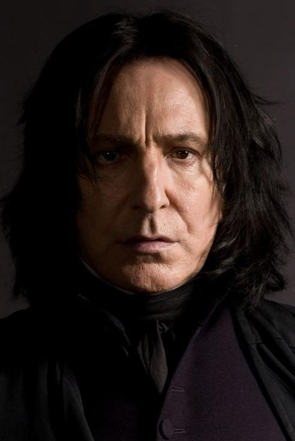
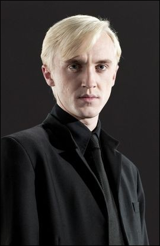
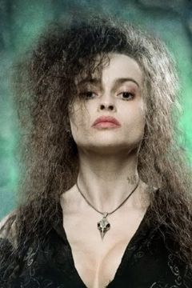
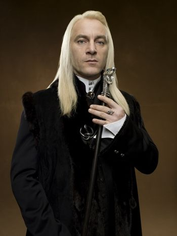
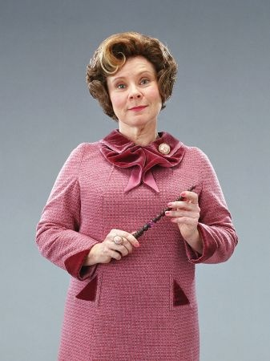

| Personnages | Biographies |
|---|---|
|  |
Tom Jedusor
Parents: Tom Jedusor Sr. Merope Gaunt
Tom Elvis Jedusor ( Angl. Tom Marvolo Riddle ) est le véritable nom de Lord Voldemort, sorcier de sang mêlé. Il fut l'un des plus dangereux sorciers de tous les temps.
Son père, Tom Jedusor Sr., abandonna sa mère, Merope Gaunt, avant sa naissance, lorsqu'il eut appris que son épouse était une sorcière qui l'avait trompé grâce à un philtre d'amour : celle-ci, en effet avait cessé de lui donner le philtre car, selon Albus Dumbledore, "elle avait dû, avec le temps se persuader qu'il l'aimait vraiment et eut pitié de lui.". Elle accoucha dans un orphelinat. Désespérée et esseulée, Merope Gaunt mourut une heure après avoir mis son fils au monde ; elle eut juste le temps de dire qu'elle voulait que son fils s'appelle Tom, comme son père, et Elvis, comme son grand-père. Tom Jedusor est, par le sang de sa mère, le seul descendant encore vivant de Salazar Serpentard, ce qui en fait en quelque sorte son héritier. Il resta jusqu'à l'âge de onze ans dans cet orphelinat ; durant les années qu'il y passe, il effraye ses camarades en faisant pendre le lapin de l'un d'eux et en volant des objets appartenant aux autres enfants. Quand Albus Dumbledore vient le chercher pour l'emmener à Poudlard, et lui annoncer qu'il est sorcier, un énorme enthousiasme s'empare de lui. Il répond avec dédain à Dumbledore qu'il savait qu'il était « quelqu'un d'exceptionnel », et fait preuve de son indépendance en déclarant qu'il préfère acheter seul ses fournitures scolaires au Chemin de Traverse.
|
|  |
Severus Rogue
Parents: Tobias Rogue et Eileen Prince
Severus Rogue ( Angl. Severus Snape ) (9 janvier 1960 - 2 mai 1998) fut professeur de potions de 1981 à 1996, professeur de défense contre les forces du Mal de 1996 à 1997, directeur de la maison Serpentard de 1981 à 1997 et également directeur de l'école Poudlard entre 1997 et 1998. Rogue a joué un rôle décisif dans la guerre contre Voldemort, même si cela resta secret pendant de longues années. En effet, la nature de sa loyauté exacte (envers Voldemort ou envers Dumbledore) est une question cruciale de la saga, résolue seulement lors du septième tome.
Severus Rogue est né le 9 janvier 1960. Il est le fils de Eileen Prince, une sorcière, et d'un Moldu, Tobias Rogue. C'est donc un sorcier de Sang-Mêlé, comme Voldemort (dont le père est moldu) ou encore Harry Potter (dont les grands-parents maternels sont moldus). Il est certain que le jeune Severus était victime de la négligence de ses parents. Cette négligence (associée aux excès de violence de son père) a contribué à la personnalité solitaire et désagréable de Rogue à l'âge adulte.
|
|  |
Drago Malfoy
Parents: Lucius Malfoy Narcissa
Drago Malefoy ( Angl. Draco Malfoy ) est né le 5 juin 1980 et est le fils unique de Lucius Malefoy et de Narcissa Malefoy. Il est l'unique héritier de la famille Malefoy. C'est un élève de Poudlard, de la maison Serpentard. Accompagné de Vincent Crabbe, Gregory Goyle et de Pansy Parkinson, il est le rival de Harry Potter durant ses six premières années de scolarité.
Selon Drago, son père avait envisagé de l'envoyer à Durmstrang, mais sa mère a insisté pour qu'il aille à Poudlard.
Drago dénonce Harry Potter et Hermione Granger lorsqu'ils veulent transférer Norbert, le dragon de Rubeus Hagrid. À cause de cela, il va en retenue dans la forêt interdite une nuit avec Harry, Hermione et Neville Londubat.
|
|  |
Bellatrix Lestrange
Parents: Druela Rosier et Cygnus Black III
Bellatrix Lestrange, née Black, est une Mangemort s’étant engagée au service de Voldemort. Elle combat à ses côtés dans les deux guerres qui ont secoué la communauté magique et s'est illustrée par la violence et la cruauté de ses actes, se bâtissant une réputation à craindre. Elle croit profondément à la pureté du sang et aux valeurs suprémacistes des Mangemorts, mais puise surtout la force de ses convictions en son fanatisme sans limites pour son maître Voldemort. Il sera dit, plus tard, qu'elle l'aimait en secret.
Bellatrix Black naît en 1951, au sein d'une grande famille de sorciers, attachée aux valeurs de la pureté du sang. Ses parents sont Druella Rosier et Cygnus Black III. Elle est la cousine de Sirius Black. Avec ses sœurs, Narcissa et Andromeda, elle est baignée dans cette philosophie, et se défendra plus tard de tout lien de parenté avec les "traîtres à leurs sang" de la famille (comme sa propre sœur Andromeda). Elle fait ses études à Poudlard dès 1962, où elle est répartie dans la maison Serpentard.[1]
|
|  |
Lucius Malefoy
Parents: Abraxas Malefoy et Druella Rosier
Lucius Malefoy ( Angl. Lucius Malfoy ) est l'un des Mangemorts de Lord Voldemort. Il est issu d'une noble famille de Sang-Pur et il considère les Moldus et les Nés-Moldus comme des êtres inférieurs. Il est l'époux de Narcissa et le père de Drago. Il fut aussi le maître de Dobby avant qu'il ne l'ait libéré par inadvertance. Il dirigeait les Mangemorts lors de la bataille du Département des mystères mais, suite à l'échec cuisant de cette opération, il tomba en disgrâce dont sa famille eut également à pâtir. Il est battu par Remus Lupin et envoyé à Azkaban. Il fut libéré un an plus tard.Durant la Bataille de Poudlard, il ne combattit pas et chercha son fils. Après la défaite de Lord Voldemort, Lucius Malefoy, s'étant repenti, recommença à vivre de manière ordinaire et devint grand-père quelques années plus tard.
Lucius est élève à Poudlard dans les années 1960 dans la maison Serpentard et est préfet de sa maison.[4]
|
|  |
Dolores Ombrage
Parents: Orford Ombrage et Ellen Cracknell
Dolores Jane Ombrage ( Angl. Dolores Jane Umbridge ) est une sous-secrétaire d'État auprès du ministre de la Magie, Cornelius Fudge. Issue de la bureaucratie du ministère de la Magie, c'est un personnage borné et particulièrement pervers, prête à tous les moyens légaux ou non, y compris la torture physique, pour imposer sa loi à l'école de sorcellerie Poudlard et ainsi obliger Harry Potter à ne plus annoncer au monde des sorciers le retour de Voldemort. Elle tente aussi d'empêcher les élèves d'apprendre les sortilèges de défense contre les forces du mal.
Dolores Ombrage a fait ses études à Poudlard et a été envoyée à Serpentard lors de sa Répartition.[3]
Elle a également un frère Cracmol qu'elle reniera par la suite au même titre que sa mère. En effet, Dolores raconte à qui veut l'entendre qu'elle est de sang-pur, étant une descendante des Selwyn.
|